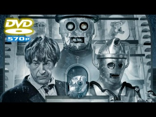
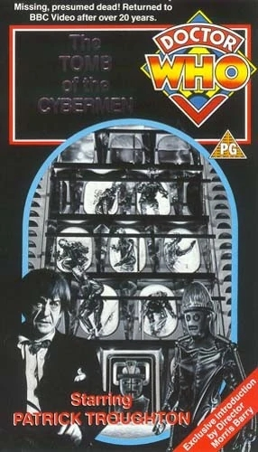
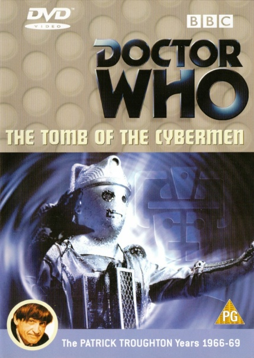
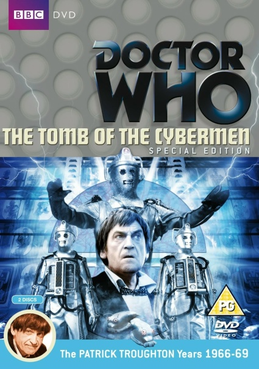
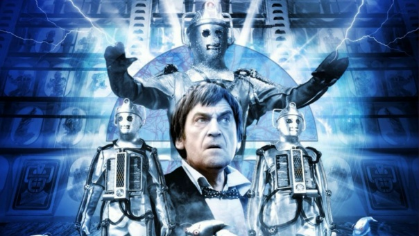
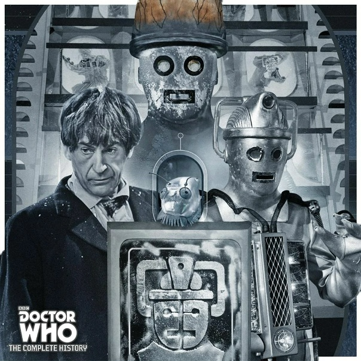
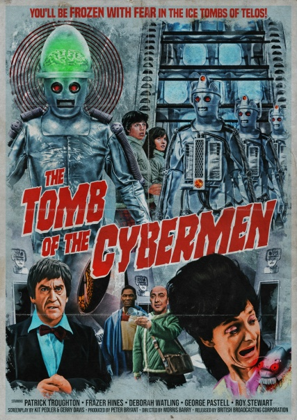
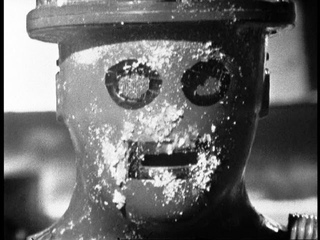

Субтитры: Русские и Английские |  |
|---|
| Все эпизоды найдены в 1991 г. - 16mm t/r |
|---|
| |
«Гробница киберлюдей» — ледяное дыхание древней угрозы на планете Телос: археологическая экспедиция вскрывает город‑гробницу, не ведая, что пробуждает не просто расу, а машину уничтожения, а Второй Доктор, Джейми и Виктория оказываются в ловушке из стальных коридоров и чужих амбиций, где каждый поворот сулит гибель, а надежда держится на логике и смелости; тон истории — холодный и клаустрофобный, будто сама планета шепчет: «Они никогда не должны были проснуться».
 VHS - май 1992 |  DVD - 14 января 2002 |   DVD-SE+Boxset - 13 февраля 2012 * Версия в нашей группе |
|---|



